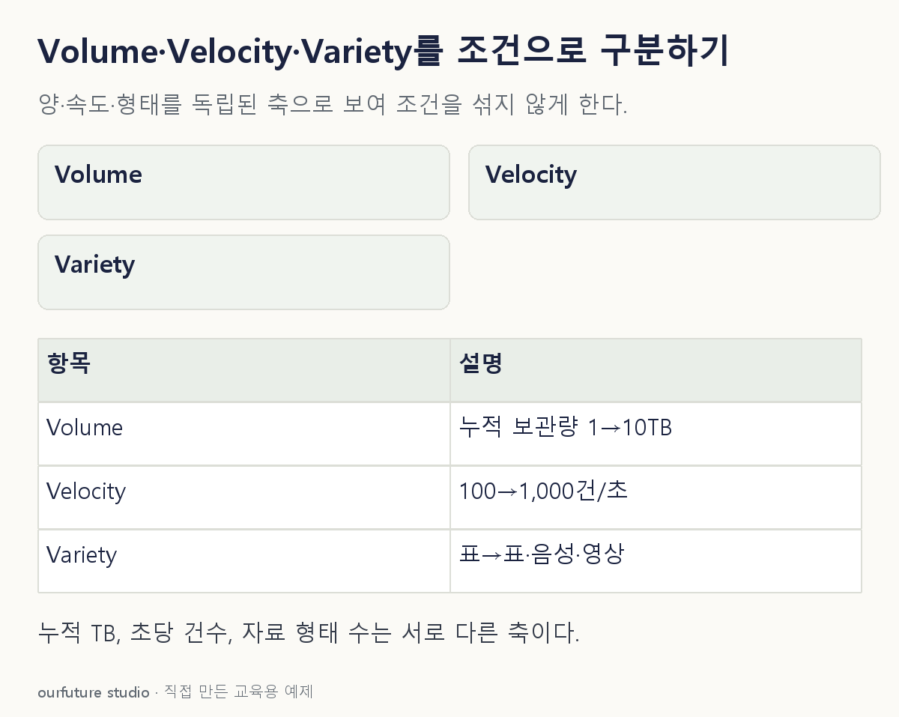

핵심 이론
Volume은 저장·처리해야 할 자료의 규모, Velocity는 자료가 발생하고 유입되는 속도, Variety는 표·문서·이미지처럼 자료 형태의 다양성을 가리키는 대표적인 설명이다. 세 특성은 함께 나타날 수 있지만 같은 뜻은 아니다.
이전보다 파일이 많이 쌓였다는 문장은 규모를, 초당 들어오는 건수가 늘었다는 문장은 속도를, 같은 양의 표에 음성과 영상이 추가됐다는 문장은 형태를 강조한다. 문제에 없는 다른 조건까지 상상하면 보기 여러 개가 그럴듯해진다. 달라졌다고 명시한 조건을 기준으로 고른다.
“빅데이터는 몇 GB 이상” 같은 고정 문턱을 이 구분에서 도출할 수는 없다. 시스템이 감당할 수 있는 크기와 처리 시간도 고려해야 한다. 여기서는 세 축의 의미를 익히기 위해 나머지 조건을 고정한 예를 사용한다.
작은 예제로 확인하기
세 시스템의 변경 내용을 비교한다.
| 변경 | 강조되는 축 |
|---|---|
| 누적 보관량 1TB→10TB | Volume |
| 유입 100건/초→1,000건/초 | Velocity |
| 표에 음성·영상 형식 추가 | Variety |
세 수치는 자체 구분 예제다. 실제 처리 속도 개선이나 시스템 용량을 측정한 결과가 아니다. 1TB를 계속 보관하면서 초당 유입이 100건에서 1,000건으로 늘었다면 이번 비교에서 직접 바뀐 것은 속도다. 오랫동안 두면 누적량도 커질 수 있지만 그것은 다른 관찰 시점의 문제다. 반대로 같은 기간·같은 유입 속도를 유지한 채 자료 형식만 세 종류로 늘면 형태 다양성의 변화로 읽는다.
그림으로 확인하기

직접 고르기
총량과 초당 유입 건수는 같다. 표 데이터에 음성·영상 형태가 추가됐다.
직접 증가한 특성은?
- 1. Volume
- 2. Velocity
- 3. Variety
- 4. 정확도
정답과 오답의 이유 확인하기
정답 3번 — Variety
양과 유입 속도를 고정하고 표현 형태가 늘었으므로 Variety를 묻는다.
- 1번은 총량이며 이 문제에서는 고정했다.
- 2번은 유입 속도이며 이 문제에서는 같다.
- 4번은 예측의 맞고 틀림을 나타내는 평가량이다.
조건 하나 바꾸어 풀기
형태는 그대로이고 초당 유입이 100건에서 1,000건으로 바뀌면?
풀이: Velocity가 강조된다.
비교한 것은 누적량이 아니라 시간당 들어오는 양이다.
다시 떠올릴 단서
얼마나 많이·얼마나 빨리·어떤 형태인지 나눈다.
근거와 적용 조건
- AWS: What is Big Data? — Volume, Velocity, Variety 및 활용 설명. 확인일 2026-10-30.
상황·수치·보기·조건 변경은 자체 교육 예제다. 민간 복원 문항의 공식 정답이나 실제 성능·학습 효과를 뜻하지 않는다.
읽은 내용을 적용해 보기
형태 수는 구분 연습용 단순 값이며 빅데이터를 정하는 임계치나 시스템 성능 지표가 아니다.